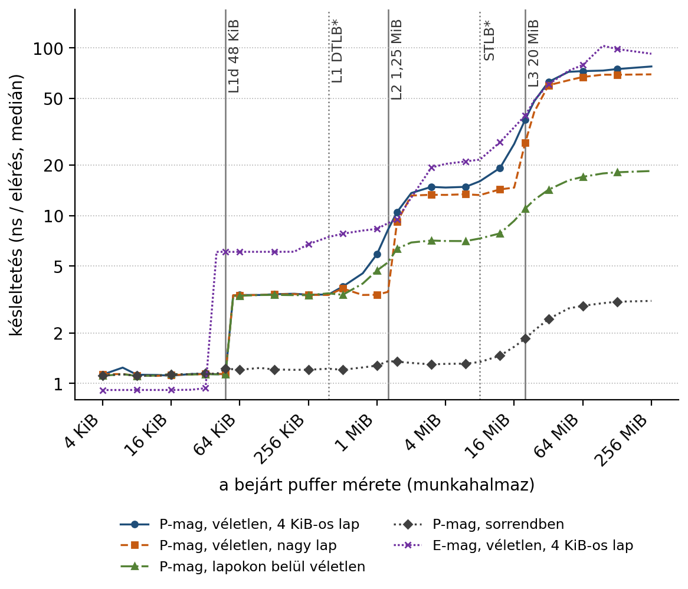

A mérőgépen (i5-13400F, 2026-11-25) egyetlen szál 128 MiB-os tömbökön olvasva 27,1 GB/s-ot ér el, hat teljesítménymagos szál 46,7 GB/s-ot, tizenhat szál pedig már csak 44,4 GB/s-ot. Ugyanezen a gépen egy véletlen mutatólánc elérése üres rendszerben 69 ns, de ha közben tizenegy másik szál olvassa a memóriát, 246 ns.
Két kérdés következik: mekkora sávszélességet kaphatnánk elvben, és miért lassul le egyetlen elérés, ha mások is dolgoznak? A válasz a DRAM fölött (A DRAM működése) ülő memóriavezérlőben (memory controller) van, amely eldönti, melyik kérés mikor kapja meg a bankokat és a sínt.
A memóriavezérlő olyan, mint egy diszpécser egy sok ablakos hivatalban. Az ügyfelek (cache-hibák, visszaírások, prefetch-ek) érkezési sorrendben állnak sorba, de a diszpécser tudja, melyik ablaknál (bankban) milyen akta (sor) van éppen kinyitva. Ha egy későbbi ügyfél ugyanazt az aktát kéri, előreveheti: gyorsan végez vele, és nem kell kétszer elővenni az aktát. Ez növeli a forgalmat, de a sor elején álló, más aktát kérő ügyfél tovább várhat.
Három tényező szabja meg, mit kap a program:
Definíció. FCFS (first-come, first-served): a vezérlő a kéréseket szigorúan érkezési sorrendben szolgálja ki. FR-FCFS (first-ready, first-come, first-served): (1) előnyt kapnak az azonnal kiadható oszlopparancsok, vagyis a nyitott sorra vonatkozó kérések; (2) azonos csoportban a régebbi nyer [S-ETH-CA].
A modellben (archkit.dram.schedule) a bankok
párhuzamosan dolgozhatnak, de közös az adatsín, és FR-FCFS nem zár le
olyan sort, amelyre még vár kérés. Ennek ára az
éheztetés (starvation): ha folyamatosan érkeznek
találatok, egy más sorra váró kérés sokáig nem kerül sorra. A valódi
vezérlők ezért korlátozzák a várakozást (életkorkorlát) és a magok,
szálak között is igyekeznek méltányosan osztani (ellenőrizendő: az
algoritmusok termékfüggők és többnyire nem nyilvánosak).
Az írások külön úton mennek: a CPU az eredményükre nem vár, ezért a vezérlő az írásokat pufferben gyűjti, és kötegben üríti ki (write batching). Így ritkábban kell az adatsín irányát átállítani, ami minden váltáskor holtidővel jár (ellenőrizendő: a váltási idők a DRAM-szabványban).
A sorpolitika (nyitva tartás vagy lezárás) a látott kompromisszum: a nyitott lap akkor nyer, ha a találati arány nagy (A DRAM működése).
A vezérlő a fizikai cím bitjeiből választja ki a csatornát, a bankot, a sort és az oszlopot. A választás megszabja, hogy egy program mintája hány bankot használ egyszerre. Egy 16 bankos, 8 KiB-os sorokból álló rankon:
A Kód szakaszban látni fogjuk, hogy egyetlen rosszul eső lépésköz tizennyolcadára csökkentheti a sávszélességet.
Definíció. A memóriarendszer elméleti csúcssávszélessége
ahol az átviteli ráta (átvitel/s), egy csatorna adatsínjének szélessége bájtban, a csatornák száma. A képlet az adatsín folyamatos kihasználását tételezi fel; a valóságot a sornyitások, az írás–olvasás váltások és a frissítés (A DRAM működése) csökkentik. Egy kétcsatornás DDR4-3200 rendszernél GB/s, kétcsatornás DDR5-4800-nál 76,8 GB/s. (A DDR5 egy modult két 32 bites alcsatornára oszt, de az együttes szélesség ugyanennyi; ellenőrizendő: a modul adatlapja.)
A nagyobb sávszélességre két út van: több csatorna (szerverprocesszorok 8–12 csatornával, ellenőrizendő) vagy szélesebb sín. A HBM (high bandwidth memory) a processzor mellé, egymásra rétegezett DRAM-lapkákat tesz, nagyon széles (csomagonként ezres nagyságrendű bites) sínnel; GPU-kon és gyorsítókon elterjedt (ellenőrizendő: generációfüggő adatok). A CXL csatolón bővíthető memória a kapacitást növeli, de a hosszabb út miatt nagyobb késleltetéssel (ellenőrizendő). Mindkettőre ugyanaz a három tényező érvényes.
Az üres rendszerben mért késleltetés a terheletlen (idle) késleltetés. Terhelés alatt a kérések sorban állnak a vezérlőnél, és a késleltetés a sávszélességgel együtt nő. Egy egyszerű sorbanállási modell:
Itt a terheletlen késleltetés, egy illesztett időállandó (mennyit ad a sorban állás), a kihasználtság. A képlet szavakban: kis terhelésnél a késleltetés alig nő, a határhoz közeledve viszont meredeken emelkedik. A itt illesztett paraméter, nem azonos feltétlenül a sín elméleti csúcsával.
Egy modern mag anatómiája bevezette a Little-törvényt; a memóriára: ha a sávszélesség, egy kérés ideje, akkor átlagosan
cache-sor van úton. Ennyi egyidejű kérést kell tudni fenntartani a sávszélesség eléréséhez. Ugyanezt láttuk a mag felől is: az MSHR-ek korlátozzák, hány sor lehet egyszerre úton (Nem blokkoló cache, memóriaszintű párhuzamosság és prefetch).
Továbbvitt eredmény. A könyv két memóriamérő
programja a bench_chase (függő mutatólánc: terheletlen és
terhelt késleltetés, TLB-hatás) és a bench_stream
(STREAM-elvű sávszélesség). A késleltetés a sávszélesség határához
közeledve meredeken nő, és
sor van úton. Ezekre a TLB, nagy lapok és a VIPT
cache, az Összeköttetések és NUMA, az Esettanulmány: mérésvezérelt optimalizálás és a 2–3. záróprojekt: cache-szimulátor és
mikrobenchmark-sorozat épít.
A roofline-modell szerint
.
A
sávszélességet nem az adatlapból, hanem mérésből vesszük, és ugyanazzal
a bájtszámolással, amellyel az
aritmetikai intenzitást számoljuk. Olvasás-domináns kernelhez (például
egy float tömb összegzése,
FLOP/bájt) a read mérés a megfelelő tető; STREAM-szerű,
írást is végző kernelhez a triad mérés és a STREAM-számolás
(24 bájt elemenként).
Továbbvitt eredmény. A bench_stream
mért sávszélessége a roofline memóriatetője; a mérőgépen a legjobb
olvasási érték 46,7 GB/s (6 szál), a STREAM-számolású triad
39,3 GB/s. Ezt a AVX és NEON a gyakorlatban, A GPU memóriarendszere és az Esettanulmány: mérésvezérelt optimalizálás
használja.
1. Ütemezés. Négy kérés érkezik egyszerre egy bankhoz, az 1, 2, 1, 2 sorokra, oktatási időzítéssel. FCFS sorrendben az első sorüres (30,5 ns), a többi mind ütközés: a PRE-k a miatt 32, 78, 124 ns-kor mennek ki, az adatok 76,5; 122,5; 168,5 ns-kor érkeznek. Átlagos késleltetés ns.
FR-FCFS előreveszi a 3. kérést (1. sor, találat): RD 16,5 ns-kor, kész 33 ns. Utána a 2. sor: PRE 32, kész 76,5 ns; végül a 4. kérés találat, kész 79 ns. Átlag ns, a teljes idő 168,5-ről 79 ns-ra csökkent, mert a két drága ütközés eltűnt.
2. Hatásfok. Ha a mérőgépen kétcsatornás DDR4-3200 lenne, a 46,7 GB/s a csúcs 91%-a, DDR5-4800-nál 61%. A gép memóriakonfigurációja a jegyzőkönyvben nem szerepel (ellenőrizendő: rendszergazdai joggal olvasható ki), ezért a hatásfokot nem állíthatjuk.
3. Little. A legnagyobb terhelésnél a terhelő szálak 44,3 GB/s-ot érnek el, a mért késleltetés 245,7 ns: sor van úton egyszerre – feltéve, hogy a terhelő szálak kérései nagyjából annyi ideig tartanak, mint a mérőszáléi.
Először a modell. A kézi példa, és egy éheztetési eset: egy kérés a 2. sorra, mellette 200, egymást 2,5 ns-onként követő találat az 1. sorra, életkorkorlát nélkül és 100 ns-os korláttal.
import sys; sys.path.insert(0, "code")
from archkit import dram, perf
R = dram.Request
for policy in ("fcfs", "frfcfs"):
s = dram.schedule([R(0.0, 0, row) for row in (1, 2, 1, 2)], policy=policy)
print(f"{policy:6s} sorrend {s.order} vége {s.total:5.1f} ns "
f"átlag {s.avg_latency:5.2f} ns")
reqs = [R(0.0, 0, 1), R(0.0, 0, 2)] + [R(2.5 * k, 0, 1) for k in range(1, 200)]
for cap in (None, 100):
s = dram.schedule(reqs, age_cap=cap)
print(f"korlát {cap!s:4s}: a 2. sor késl. {s.accesses[1].latency:5.1f} ns, "
f"átlag {s.avg_latency:5.1f} ns, {s.bandwidth:5.2f} GB/s")fcfs sorrend [0, 1, 2, 3] vége 168.5 ns átlag 99.50 ns
frfcfs sorrend [0, 2, 1, 3] vége 79.0 ns átlag 54.75 ns
korlát None: a 2. sor késl. 558.5 ns, átlag 33.1 ns, 23.03 GB/s
korlát 100 : a 2. sor késl. 146.0 ns, átlag 91.8 ns, 21.37 GB/sA korlát a „szerencsétlen” kérést négyszer hamarabb szolgálja ki, de az átlagos késleltetést majdnem háromszorosára, a sávszélességet pedig 7%-kal rontja: a méltányosságnak ára van.
Most 1024 egyszerre várakozó kérés három leképezéssel és három lépésközzel:
fields = (("sor", 15), ("bank", 4), ("oszlop", 7), ("eltolás", 6))
maps = {"sor:bank:oszlop": dram.AddressMap(fields),
"sor:oszlop:bank": dram.AddressMap((fields[0], fields[2], fields[1], fields[3])),
"XOR-os": dram.AddressMap(fields, bank_hash=True)}
for step in (64, 8192, 128 * 1024):
cells = []
for name, m in maps.items():
reqs = [R(0.0, d["bank"], d["sor"]) for d in (m.decode(i * step) for i in range(1024))]
cells.append(f"{name}: {dram.schedule(reqs).bandwidth:5.2f}")
print(f"lépés {step:6d} B | " + " | ".join(cells), "GB/s")lépés 64 B | sor:bank:oszlop: 25.32 | sor:oszlop:bank: 25.32 | XOR-os: 25.32 GB/s
lépés 8192 B | sor:bank:oszlop: 22.10 | sor:oszlop:bank: 15.06 | XOR-os: 22.10 GB/s
lépés 131072 B | sor:bank:oszlop: 1.39 | sor:oszlop:bank: 1.39 | XOR-os: 22.10 GB/sA sorfolytonos minta mindhárom leképezéssel majdnem eléri a sín 25,6 GB/s-os határát. A 128 KiB-os lépés a két egyszerű leképezésnél mindig ugyanazt a bankot, de más sort ér, ez a legrosszabb eset; az XOR-os leképezés szétszórja a 16 bankra, és mivel a bankok párhuzamosan nyitnak, a sávszélesség visszaáll 22 GB/s-ra, pedig minden kérés ütközés.
A mérőprogram (code/bench/bench_stream.cpp) a STREAM
mintájára [S-STREAM] elemi kernelekkel dolgozik; a
triad:
#define KERNEL __attribute__((noinline)) static void
KERNEL k_triad(double* __restrict d, const double* __restrict a,
const double* __restrict b, double q, size_t n) {
for (size_t i = 0; i < n; ++i) d[i] = a[i] + q * b[i];
}make -C code/bench
code/bench/build/bench_stream --cpus 0,2,4,6 --threads 1,2,4 --sizes 131072
code/bench/build/bench_chase --mode latency --cpu 2 --sizes 16,256,4096,262144A közölt számok g++ 15.2.0,
-O3 -march=native -fno-tree-loop-distribute-patterns
fordításból, 7 ismétlés mediánjaként, powersave
szabályozóval, egy háttérben futó böngésző mellett születtek. A szálak
előbb a P-magokra, 6 fölött az E-magokra és a hiperszálakra
kerülnek.
meta, rows = perf.read_bench_csv("figures/data/ca051-stream.csv")
bw = {(r["kernel"], r["threads"]): r["median_gbps"] for r in rows}
print("szál read copy triad copy*1,5")
for t in (1, 2, 4, 6, 8, 16):
print(f"{t:4d} {bw['read', t]:5.1f} {bw['copy', t]:5.1f} {bw['triad', t]:6.1f} "
f"{1.5 * bw['copy', t]:8.1f}")szál read copy triad copy*1,5
1 27.1 17.2 22.8 25.8
2 33.0 24.1 27.5 36.1
4 40.5 39.0 38.1 58.6
6 46.7 40.5 39.3 60.8
8 42.5 35.7 37.3 53.6
16 44.4 35.1 36.7 52.6Hat szálig a sávszélesség nő, utána még csökken is. Ennek egy része a
mérés módjából jön: a program minden szálnak egyenlő szeletet ad, és a
leglassabb befejezéséig méri az időt, a hat P-mag után bekapcsolt
E-magok és hiperszálak pedig lassabbak. A sorban állás és a
sorpuffer-találatok romlása is hozzájárulhat; ez a mérés a hatásokat nem
választja szét. A STREAM-számolás a copy elemenként 16
bájtjával nem tartalmazza a write-allocate forgalmat
(Csere- és írási stratégiák): ha a célsort írás
előtt be kell olvasni, a valódi forgalom 1,5-szeres. A fordító nem
használt gyorsítótárat kerülő (movnt) írást, de a
copy*1,5 oszlop 60,8 GB/s-a nagyobb, mint a tiszta olvasás
legjobb értéke. Ez még nem ellentmondás: a 60,8 GB/s-ból csak a
kétharmad (40,5 GB/s) olvasás, a harmadik harmad visszaírás, és a
read mérés nem feltétlenül a sín plafonja, ha a magok
egyidejűleg kinn tartható olvasási hibáinak száma korlátozza. Hardveres
számláló nélkül azonban nem tudjuk eldönteni, hogy ez a magyarázat, vagy
a processzor hagyja el bizonyos esetekben az előzetes beolvasást;
nyitott kérdésnek hagyjuk (ugyanez a jelenség látszik a
saxpy-nál, AVX és NEON a
gyakorlatban). A tanulság: a sávszélességet mindig a számolási
móddal együtt közöld.
A chase kernel 16 lépésenként kibontott ciklusa 16
egymástól függő betöltésre fordul, ezért egyik sem indulhat az előző
vége előtt:
__attribute__((noinline)) static Node* chase(Node* p, size_t steps) {
for (size_t i = 0; i < steps; i += 16) {
#pragma GCC unroll 16
for (int k = 0; k < 16; ++k) p = p->next;
}
return p;
}mov rax, QWORD PTR [rax] ; ez a sor 16-szor ismétlődik egymás utánA bench.hpp harness (Benchmarkolás:
mérni tanulni) bemelegít, ismétel, és mediánt ad. Az eredmény a
munkahalmaz függvényében:

A lépcsők a cache-szintek méreténél vannak (Lokalitás és a memóriahierarchia). A
random és a huge görbe eltérése elsősorban a
címfordítás ára. A sorrendben bejárt lánc 3,1 ns-a azt mutatja, hogy a
prefetch a késleltetést elrejti, ezért a memóriakésleltetést csak
véletlen lánccal lehet mérni. A „lapokon belül véletlen” minta 18,5
ns-os eredménye több hatás (kevesebb TLB-hiba, DRAM-sortalálat,
szomszédos sort előtöltő prefetch) együttese, amelyet ez a mérés nem
választ szét.
A loaded mód egy mérőszál mellett változó számú és ütemű
olvasó szálat futtat; a modell illesztése:
meta, rows = perf.read_bench_csv("figures/data/ca051-terhelt.csv")
pts = [(r["load_gbps"], r["median_ns_per_access"]) for r in rows]
idle = pts[0][1]
bmax, serv = dram.fit_queue(pts, idle)
print(f"L0 = {idle:.1f} ns, illesztett B_max = {bmax:.1f} GB/s, S = {serv:.1f} ns")
for b, lat in (pts[0], max(pts)):
print(f"B = {b:5.1f} GB/s: mért {lat:6.1f} ns, modell "
f"{dram.queue_latency(b, bmax, idle, serv):6.1f} ns, "
f"N = {dram.in_flight(b, lat):5.1f}")L0 = 69.4 ns, illesztett B_max = 56.8 GB/s, S = 44.4 ns
B = 0.0 GB/s: mért 69.4 ns, modell 69.4 ns, N = 0.0
B = 44.3 GB/s: mért 245.7 ns, modell 226.6 ns, N = 170.0Figyeljük meg a 40 GB/s körüli pontokat: azonos sávszélességnél 128 és 215 ns is előfordul, attól függően, hány szál (és milyen mag) adja a terhelést. Az egyetlen sávszélességtől függő görbe tehát csak a trendet írja le.
Nyisd meg a Terhelt memóriakésleltetés lapot.
bench_stream programot 1, 2, 4
és több szállal, és keresd meg, hány szálnál telítődik a
sávszélesség.chase) a cache-nél jóval nagyobb pufferen.sum kernel float
tömbön
FLOP/bájt. Mekkora a roofline szerinti felső határ 6 szálon, a
GB/s és a
GFLOP/s értékkel? Hol a gerincpont?ca049-mlp.csv 32 független véletlen
láncának átbocsátásával.A memóriavezérlő dönti el a kérések sorrendjét: az FR-FCFS a nyitott
sorra vonatkozó kéréseket veszi előre, ami növeli a sávszélességet, de
éheztethet. A címleképezés szabja meg, hány bank dolgozhat egyszerre. A
csúcssávszélesség átviteli ráta × buszszélesség × csatornaszám; a mért
érték ennél kisebb, és a bájtszámolás módjától függ. A mérőgépen a
bench_stream 6 szállal 46,7 GB/s olvasást (STREAM-számolású
triad: 39,3 GB/s), a bench_chase 69–78 ns
terheletlen memóriakésleltetést mért. Terhelés alatt a késleltetés a
sorbanállás miatt meredeken nő (44,3 GB/s-nál 246 ns), és a
Little-törvény szerint
sor van úton. A roofline memóriatetejét ugyanazzal a bájtszámolással
mért sávszélességgel kalibráljuk.
read) mérésből, mert a kernel is csak
olvas.1. GB/s.
2. , átlagosan kb. 17 sor.
3. FCFS: 1. kérés 30,5 ns; 2. (ütközés) PRE a miatt 32-kor, kész 76,5 ns; 3. (ütközés) PRE 78-kor, kész 122,5 ns. FR-FCFS: a harmadik (7. sor) találatként 33 ns-ra elkészül, a 8. sor PRE-je 32 ns-kor megy ki, kész 76,5 ns.
4. GFLOP/s, ez jóval kisebb a csúcsnál, tehát memóriakorlátos. A gerincpont FLOP/bájt.
5. , ha , azaz .
rho = idle / (idle + serv)
print(f"rho = {rho:.3f}, B = {rho * bmax:.1f} GB/s")
near = sorted((b, lat) for b, lat in pts if 30 <= b <= 40)
print("mérés 30–40 GB/s:", ", ".join(f"({b:.1f}; {lat:.0f})" for b, lat in near))rho = 0.610, B = 34.6 GB/s
mérés 30–40 GB/s: (31.8; 152), (34.7; 146), (37.6; 138), (39.3; 128), (39.9; 187)A modell 34,6 GB/s-nál ad kétszeres (139 ns) késleltetést; a mért pontok itt 128–187 ns között szóródnak, a nagyságrend jó, a pontos érték a terhelés összetételétől függ.
6. sor.
_, mlp = perf.read_bench_csv("figures/data/ca049-mlp.csv")
for r in mlp:
if r["core"] == "P" and r["chains"] in (16, 32):
ns = r["median_ns_per_access"]
print(f"{r['chains']:2d} lánc: {ns:.2f} ns/sor, {64 / ns:.1f} GB/s")16 lánc: 5.45 ns/sor, 11.7 GB/s
32 lánc: 5.07 ns/sor, 12.6 GB/sAz L1 hibapufferei nem elegendőek ennyi sorhoz, a többletet valószínűleg az L2 hardveres prefetchere tartja úton. A véletlen láncoknál, ahol a prefetch nem segít, még 32 lánc is csak kb. 12,6 GB/s-ot ad (Nem blokkoló cache, memóriaszintű párhuzamosság és prefetch): a mag sávszélessége az úton tartható sorok számától függ.